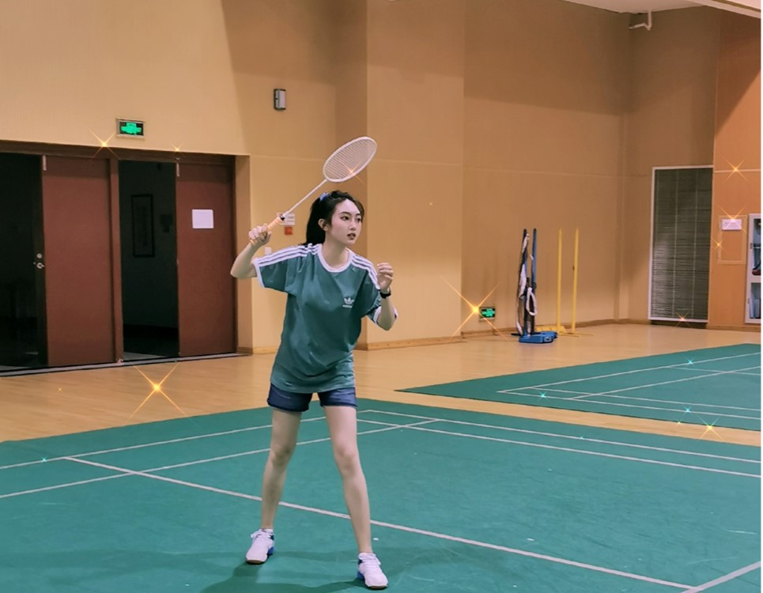
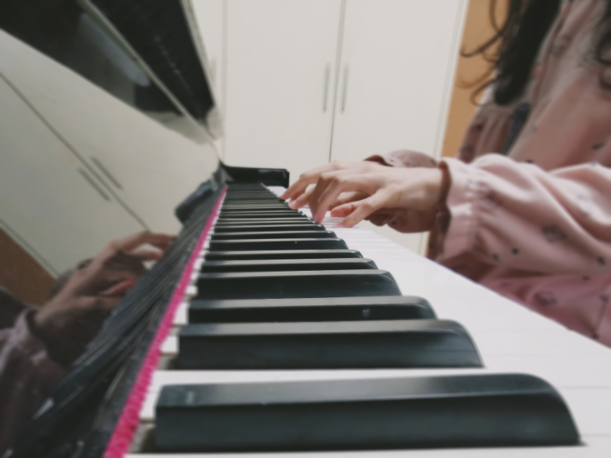
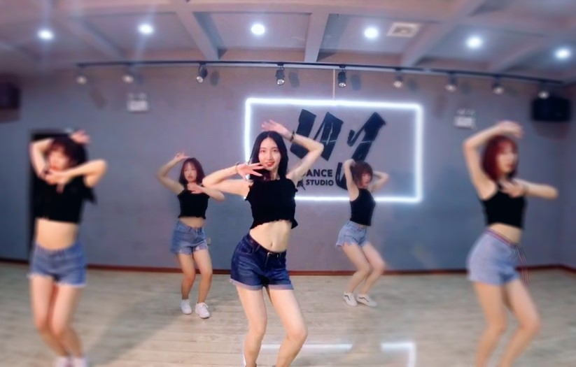

羽毛球
钢 琴
街 舞
rap star
返回>>

省级青年运动会第三名
小学开始跟着世界冠军——赵芸蕾的启蒙教练学习羽毛球，曾代表宜都市参加省运会，获得女子单打第三名的好成绩
中央音乐学院钢琴十级
小学开始学习电子琴，考过十级之后，经老师推荐进修钢琴，目前已经考到中央音乐学院的钢琴十级证书，并且参加过大大小小很多比赛

四岁开始学习跳舞
高中毕业之后开始接触爵士舞，疫情期间参加学校街舞社的线上舞蹈接力

最喜欢的rapper——姜云升
一位文化绿洲rapper，代表作《你一定能够成为你想要成为的人》《成名》，曾经在我最迷茫的时候给了我很多慰藉